Two robot arms that build LEGO
and hold each other's work steady
From a drawing to two finished structures: blueprint, plan, control, manipulation, collision avoidance and task completion, and the algorithm behind each stage.
Supervisor's three requirements, all met
Brick list or, optionally, a drawing.
Fully automatic: order, grips, press points, supports.
Arch (11 bricks, 1 support) + S3 bridge (16 bricks, 3 supports).
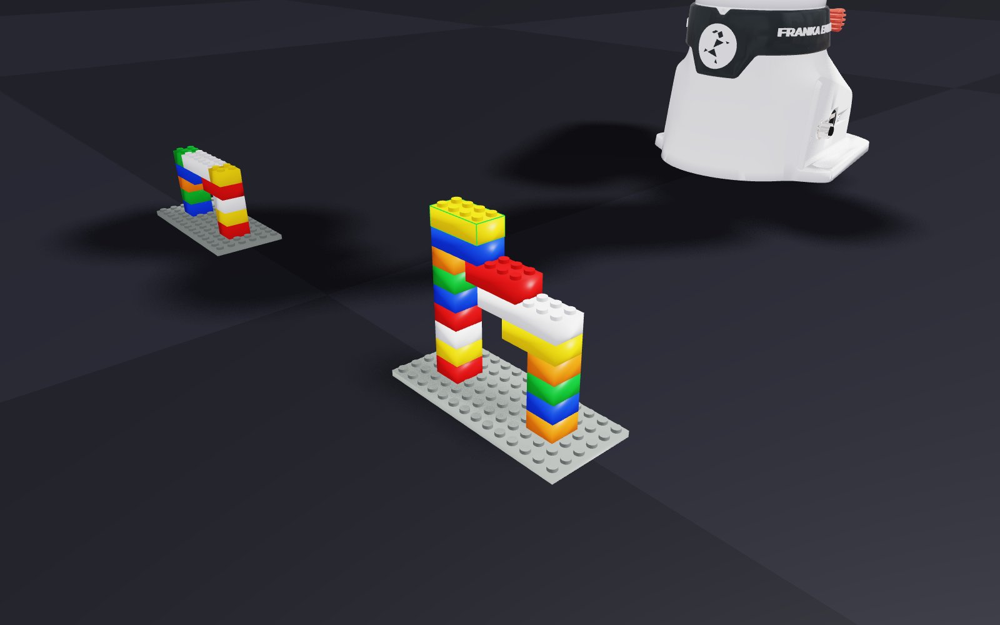
Four transformations, each with one clear job
A physics simulation of the real cell
- 2 × Franka FR3, 0.9 m apart, each with its own studded pad and feeder bricks.
- Newton 1.2.1 + MuJoCo solver on the GPU: 60 fps × 16 sub-steps.
- Bricks: visual mesh + simple hidden colliders (slab, walls, stud cylinders).
- Clutch: a brick that passes the snap check is welded to the bricks below.
- Breaking: each weld's load → utilisation u; u ≥ 1 twice in a row → the joint breaks and the run fails.
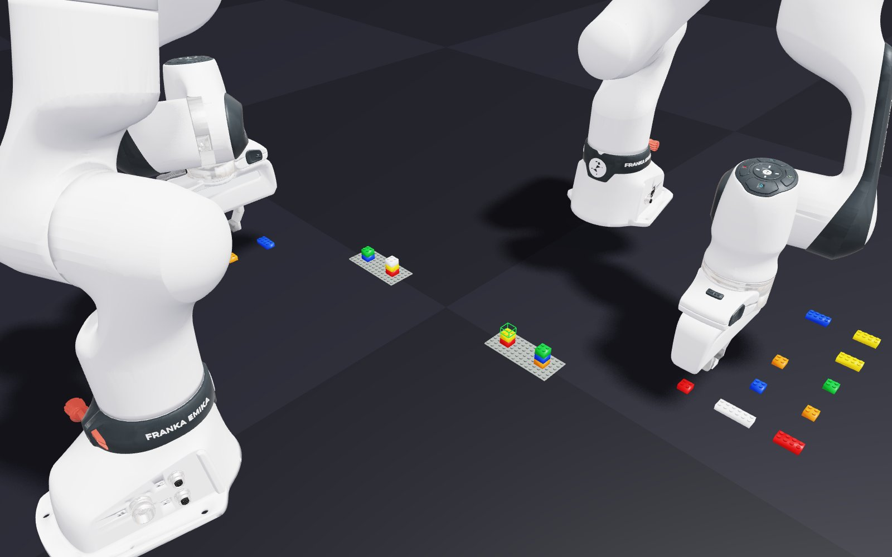
The inputs
Black-on-white silhouettes (any polarity). S3 is given directly as a brick list.


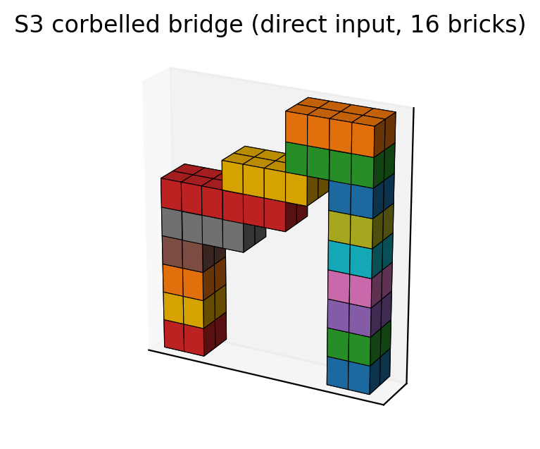
Carve with shadows, then tile with bricks visual hull + greedy tiling

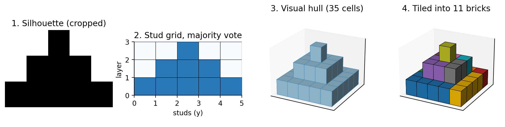
- Threshold + crop; polarity from the border.
- Scale: 1 stud = 8.0 mm, 1 layer = 9.6 mm.
- Grid cell is full if > 50 % dark.
- Keep a cell only if every view sees it.
- Tile layer by layer, overhangs first.
- Number bricks in build order.
How a brick is chosen
Every placement covering the next cell is scored, in this order:
- rests on the most different bricks below (ties the arch's legs together)
- fewest seams over seams (running bond)
- bigger bricks
- long axis alternates between layers
- closer to the centre
No support below → error "overhangs too far", never an unbuildable blueprint.
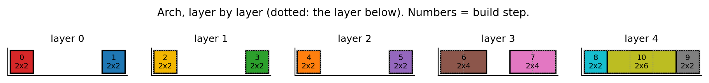
One step per brick
Will pressing this brick break the model? force-balance LP
- A stud joint resists pull-off up to 11.3 N/stud; pushing a brick on needs 8.9 N/stud.
- Press on an overhang = standing at the end of a diving board: it levers the root joint open.
- Utilisation u = prying moment ÷ moment the studs can resist (closed form per edge).
- Linear program over all bricks: equilibrium of every brick, minimise the worst u. If u < 1, the structure holds (lower-bound theorem).
- Worst case of 4 sideways 3 N disturbances.
Safety factor 3: simulated joints are compliant (a pier leans), which a rigid model underestimates.
Which steps need a helping hand
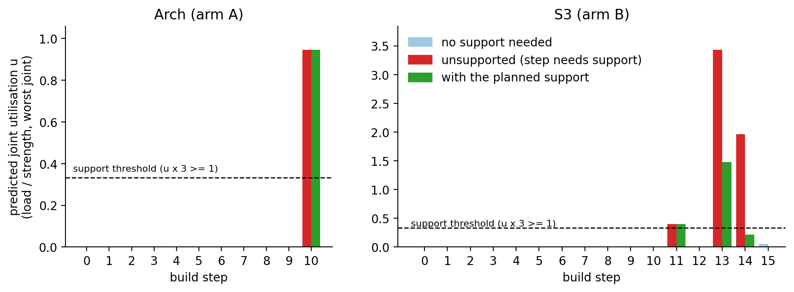
Generated, not hand-written: arch step 10 (the crown), S3 steps 11, 13, 14. Steps 13 and 14 drop from 3.43 → 1.48 and 1.96 → 0.22 with support.
Where to hold weakest-joint support
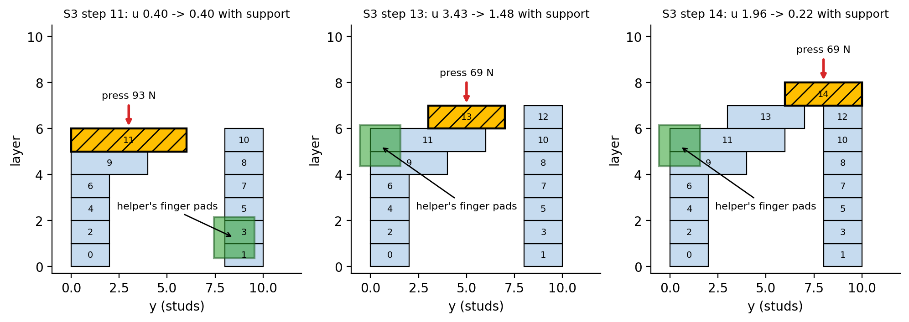
- Find joints over the threshold.
- Candidate pad positions: every stud column × seam/quarter heights.
- Keep only reachable ones (clear of plate, backed by bricks, away from the placing hand; lean 45°).
- Add each as a bounded grip to the LP; keep the lowest predicted load.
Plan the big moves, script the small ones
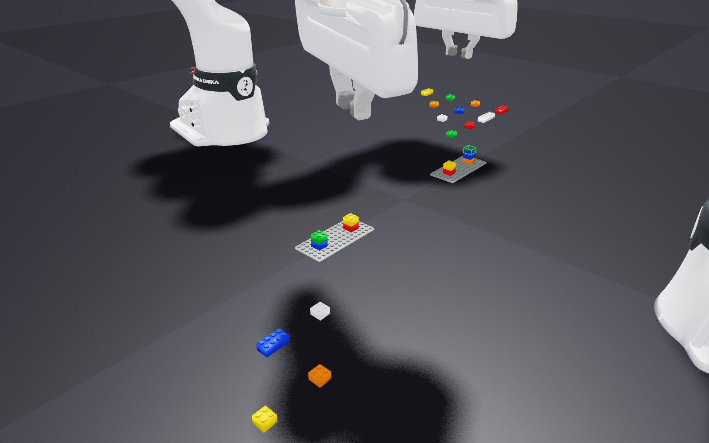
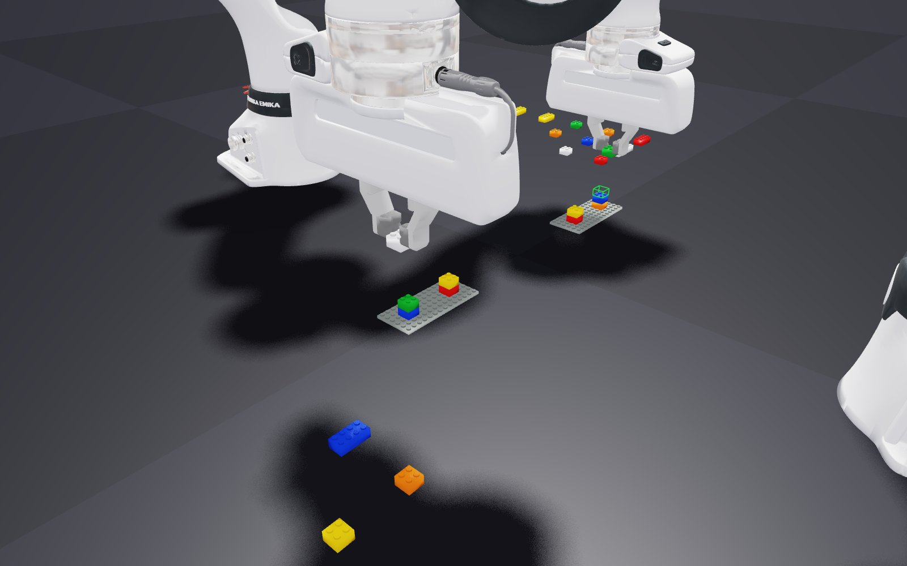
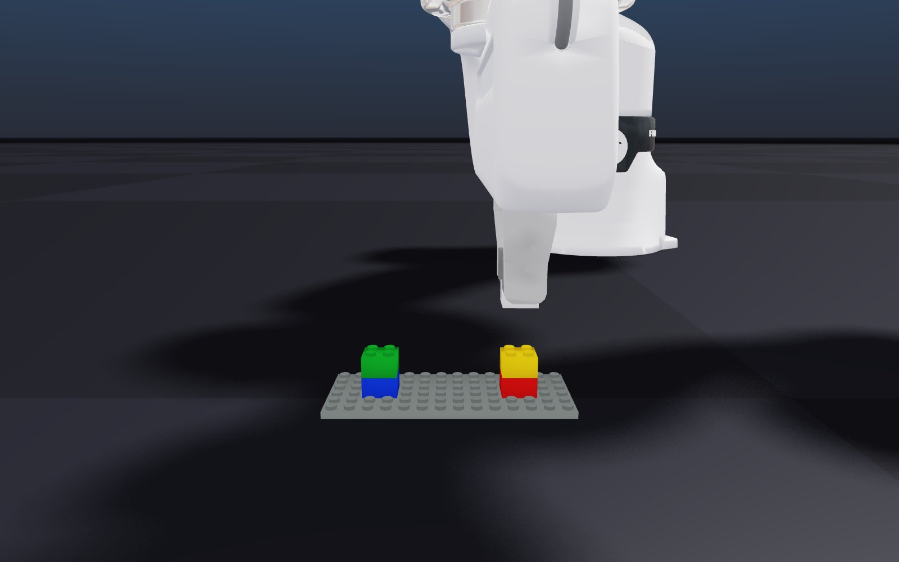
Grip that fits, or drop-and-press
Full finger-sphere check at the seat, open and closed, 1.5 mm margin. First that fits:
- planner's grip
- other face pair, centred
- edge grips (≥ 70 % of pad on the face)
- drop-and-press: release just above neighbours, close fingers, press stud tops
Tight slots (arch crown, ~0.1 mm play): scripted wriggle — 0.1 mm lateral, 0.1° rocking, longer press. RL was tried; scripted won.
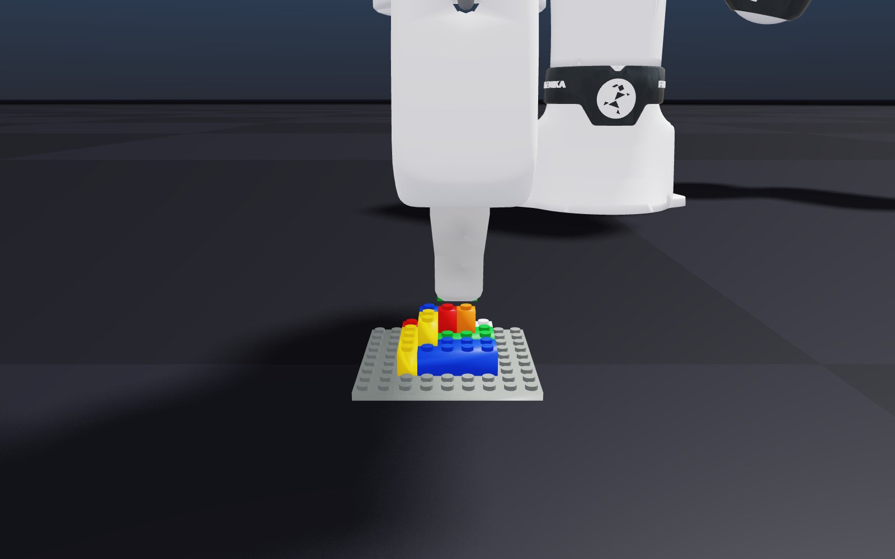
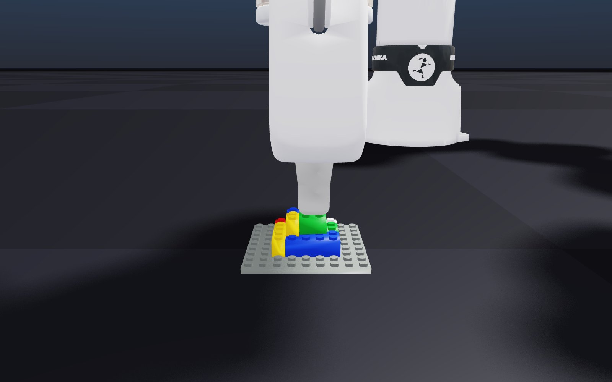
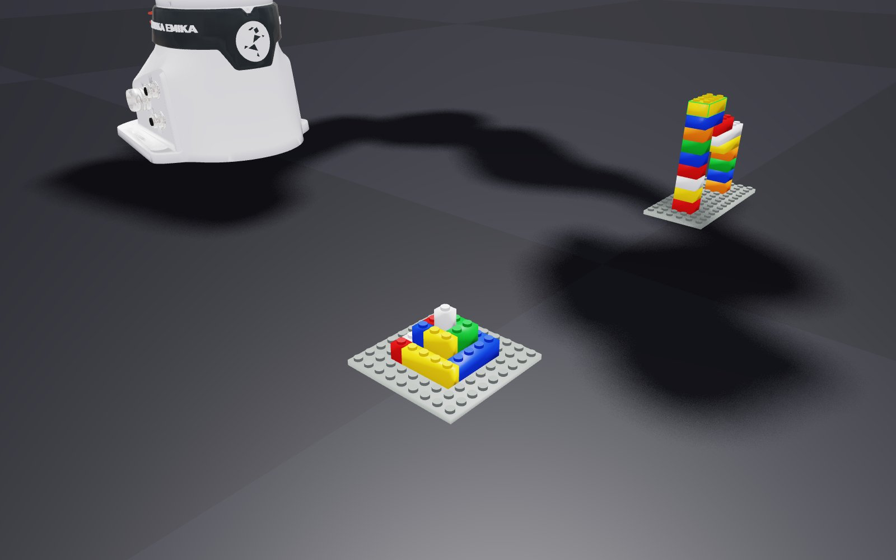
Reciprocal support
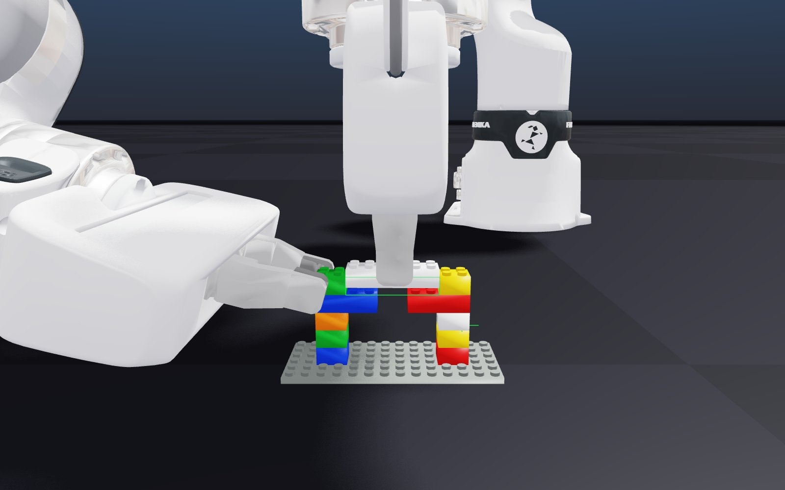
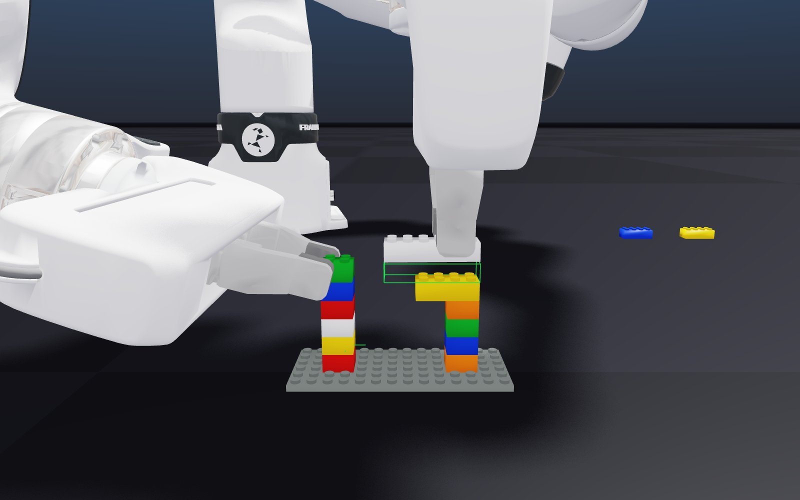
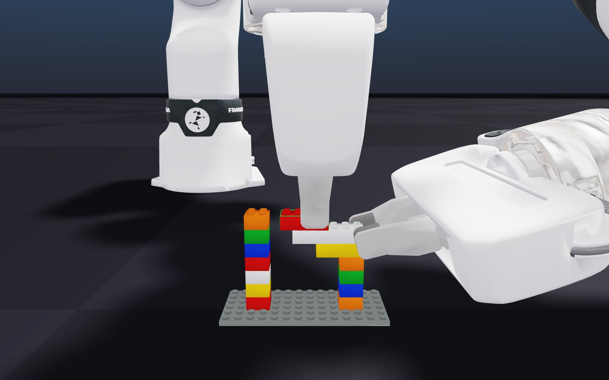
- Tries up to 8 generated configurations; each must be no weaker than planned and clear its own approach and the builder's insertion corridor.
- Slow 10 mm guarded approach, closes, needs force on both fingers (13–14 N measured vs 14.3 N planned), then holds still.
Five layers of protection
Sharing space with reservations
- Each arm keeps its own proven planner — no joint 14-joint planner needed.
- Planned path: reserve the boxes swept by each link's spheres.
- Straight move: reserve the measured arm volume padded by 1.5 × hand travel; stop if the arm leaves it.
- Admit only if ≥ 25 mm from the other arm's booking; otherwise wait at a checked pose.
The coordinator: build, ask, help
- Each arm follows its own plan; both build at once when space allows.
- Support requested before pickup; granted only when both arms are idle.
- Tie → A first, B's request kept and served next (no starvation).
- Finished builder stays as helper. "Both hold a brick and wait" cannot happen.
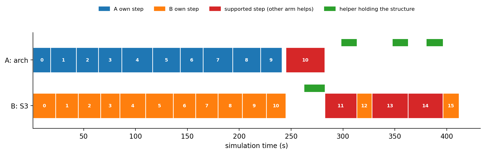
241 s: A asks (step 10) · 245 s: B asks (step 11) · A served first, then B, then B's 13 and 14 with A helping
When is a brick placed? When is the job done?
| Snap check | limit |
|---|---|
| sideways | 2 mm |
| height | 1.5 mm |
| rotation / tilt | 5° / 5° |
Pass → weld on, step complete. Fail → run stops (never hidden).
Independent verifier reads only the saved files: every step mated, every support requested, held with two-finger force and released in order, real parallel motion, no bad contacts or breaks. Both runs: exit 0.
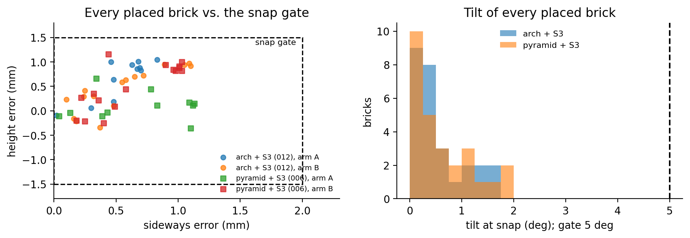
Three structures, from their inputs
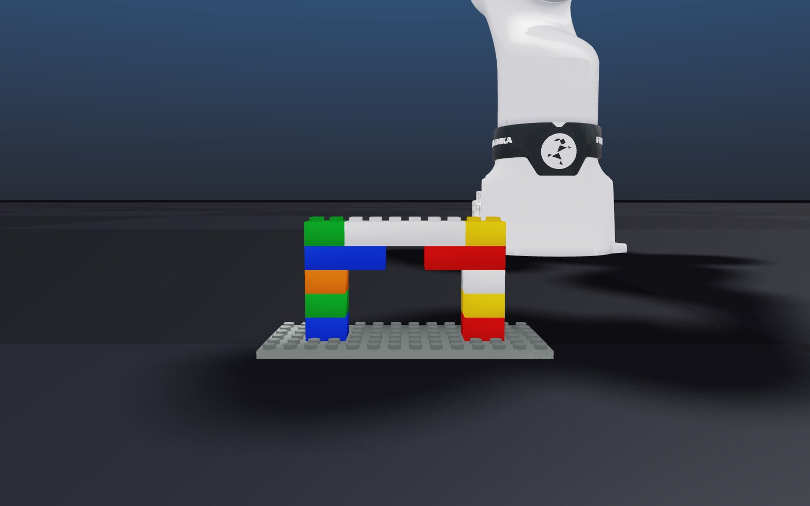
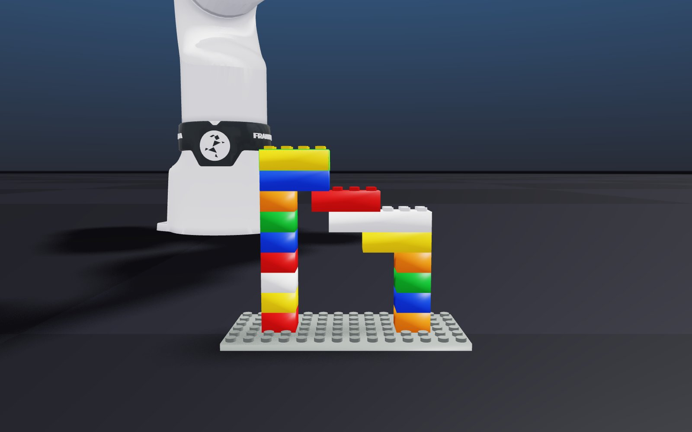
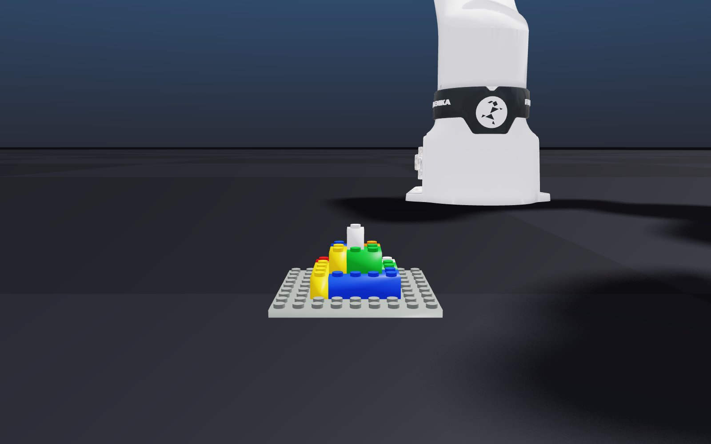
| Arch + S3 (012) | Pyramid + S3 (006) | |
|---|---|---|
| Bricks / supports | 27/27 · 4 held | 27/27 · 3 held |
| Simultaneous frames · sim time | 1,643 · 411 s | 1,358 · 400 s |
| Planned motions / failures · min clearance | 188 / 0 · 1.21 mm | 196 / 0 · 1.60 mm |
What is not done yet
- Simulation only — no physical robot.
- Brick aim uses the simulator's brick pose; a camera estimator exists but is not in the dual-arm runs.
- Clutch is snap check + welds. Opt-in
--stud-fitneeds a real 8.9 N/stud push: pyramid builds; S3's last step overloads a 2-stud joint by ~3.5 %.
- Conservative stability model (safety factor 3); for 2 of 4 supports the model shows no load reduction, because the critical pier-base joint cannot be gripped.
- Silhouettes cannot show hidden cavities.
- Sampled collision checks, backed by the physics contact audit.
Drawing → blueprint → plan → control → two finished structures
Visual hull + bonded tiling · layer-ordered plan with force-aware grips · force-balance LP for supports · cuRobo + straight contact moves + IK · five-layer collision safety with reservations · deterministic coordinator, snap check, independent verifier.
Questions?